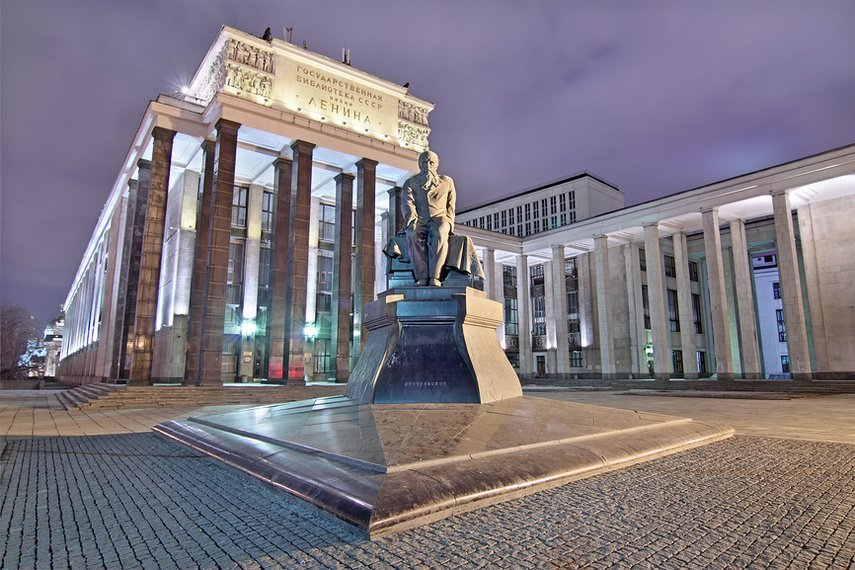

Российская государственная библиотека |
О библиотеке |
ГлавнаяЧитателямКаталогО нас |
 История РГБИстория одной из крупнейших в мире национальных библиотек — Российской государственной библиотеки — начиналась в середине XIX века и теснейшим образом связана с именем графа Н. П. Румянцева. В этом разделе вы найдёте краткую историческую справку о РГБ вплоть до наших дней.ФондыВ стенах РГБ находится уникальное собрание отечественных и зарубежных документов на 367 языках мира. Объём фондов превышает 47 миллионов единиц хранения, среди которых — специализированные собрания карт, нот, звукозаписей, редких книг, диссертаций, газет и др.ПарнтнерыСреди партнёров библиотеки — Министерство Культуры РФ, UNESCO, IFLA и другие организации и ассоциации.Контакты8-800-100-57-908-499-557-04-70 post@rsl.ru |